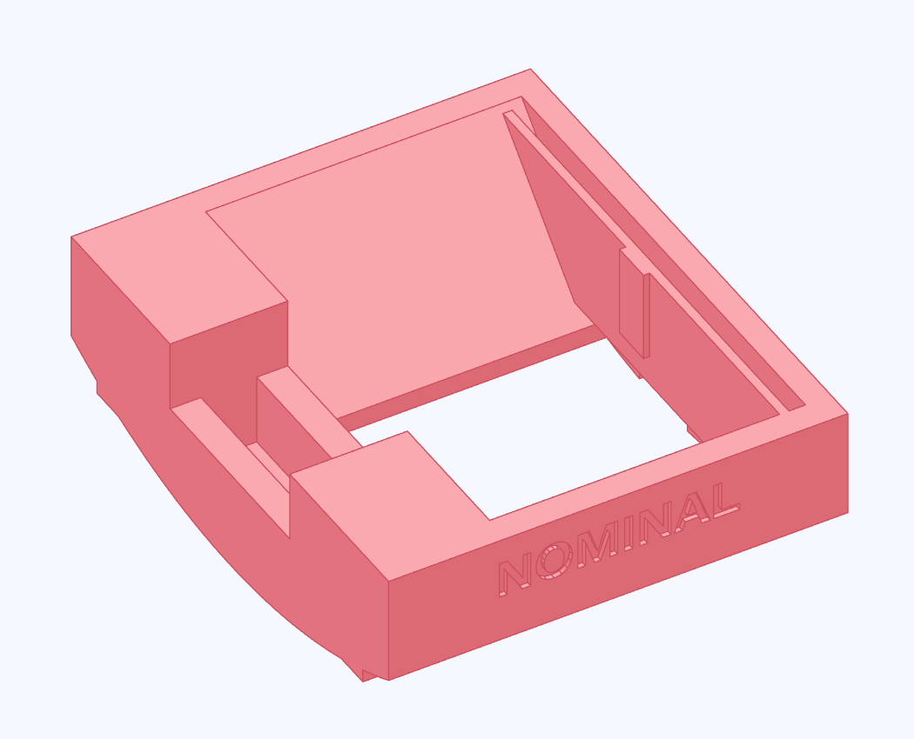
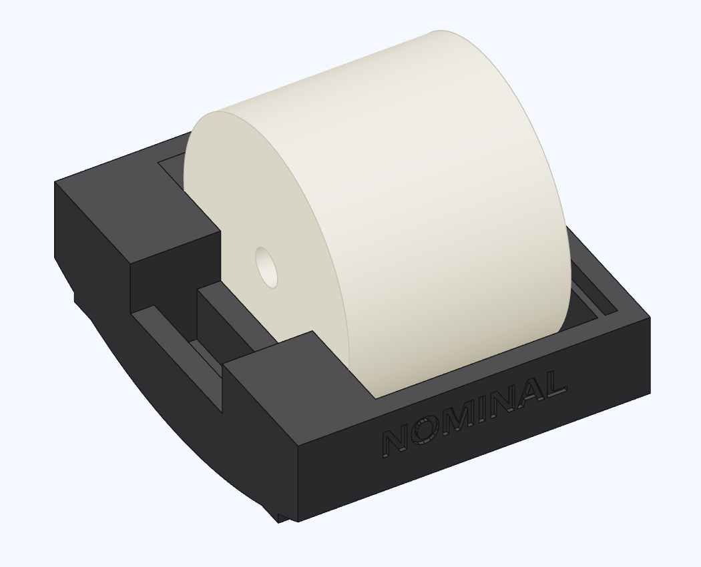

Seat the float in the sled
Start with NOMINAL. The face that was on the print bed goes against the datum wall beside the roller slot.


- Find the float's print-bed face. Hold it flat against the datum wall, with the guide bore along the sled.
- Press down into the vee until the far face passes the leaf and the leaf springs back.
Check the seat
The float bears on the vee and its bottom face stays against the datum wall. The roller slot remains clear. The float stays seated when you turn the sled in hand.